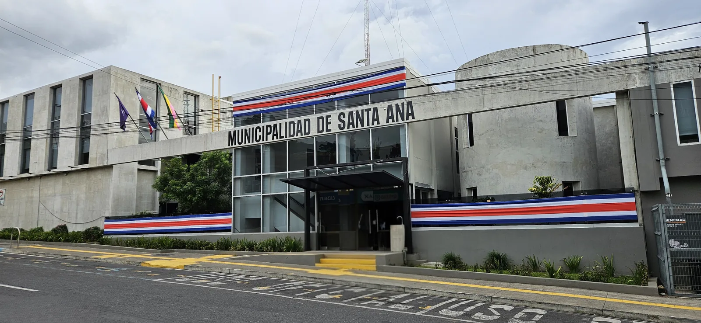

Tres votos divididos y el Plan Regulador a la vista
Entre el 30 de junio y el 11 de agosto el Concejo Municipal tomó más de cien acuerdos. Tres no salieron por unanimidad, y el alcalde espera enviar el nuevo Plan Regulador «antes de finalizar agosto».
Redacción ¡Diay!Septiembre 20263 min de lectura

Entre el 30 de junio y el 11 de agosto el Concejo Municipal de Santa Ana tomó más de cien acuerdos. En tres de ellos las actas dejan constancia de votos en contra.
Tres votos divididos
El 4 de agosto una regidora presentó una moción en defensa de la lactancia materna, la maternidad y los derechos laborales de las mujeres trabajadoras. En la discusión se le agregó proclamar al cantón «Cantón Pro Vida y amigo de la lactancia». Se aprobó seis a uno. Quien votó en contra pidió aclarar a qué se refería el término agregado.
«con este término que se le acaba de incorporar, creo que se desvirtuó, a mi parecer, al menos la intención loable que usted traía»
quien votó en contra
El 11 de agosto se aprobó, también seis a uno, el Reglamento para la Adjudicación de Becas de la Municipalidad de Santa Ana para estudiantes de escasos recursos. El voto en contra detalló artículo por artículo sus objeciones.
«a las personas que realmente necesitan de las becas es a las que menos se les tuvo en consideración»
quien votó en contra
El 7 de julio, cinco a dos, el Concejo rechazó el criterio legal de un asesor y un recurso de revocatoria, y acogió la apelación para elevarla al Tribunal Contencioso Administrativo.
El Plan Regulador, en la etapa final
El 21 de julio el alcalde informó que el INVU tiene el nuevo Plan Regulador en la etapa final y que espera enviarlo al Concejo «antes de finalizar agosto». Advirtió que «será como un tsunami para nuestro departamento de Ordenamiento Territorial». Las actas revisadas terminan el 11 de agosto. El 4 de agosto la presidencia prorrogó la Comisión Especial de Plan Regulador hasta el 30 de abril de 2028.
La plata
El 11 de agosto el Concejo aprobó el Presupuesto Extraordinario N.° 2-2026 por ₡1.400.979.408,10. El 4 de agosto había aprobado por unanimidad dos transferencias al Comité Cantonal de Deportes y Recreación: ₡176.453.201,83 del superávit 2025 y ₡44.317.288,54 por el 3% de junio.